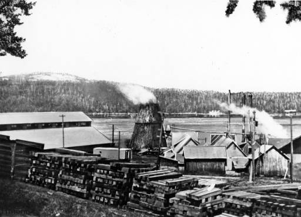

|

|
Boise Cascade to Close MillIdaho Statesman December 22, 1976 |
|
Boise Cascade Corp. blasted the environmentalists' victory by announcing it would close its McCall sawmill by fall 1977 due to decreasing, timber supplies. One company spokesman called the Warren and South Fork decisions the "last straw." |